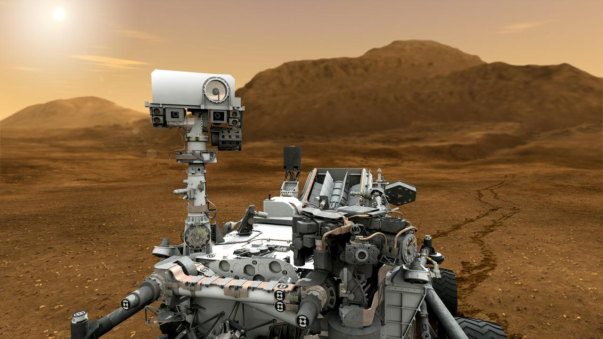
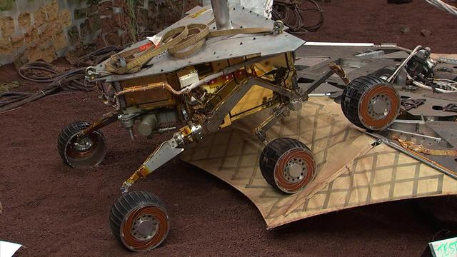

Meet the Rovers
Perseverance
Launched on July 30, 2020, Perseverance touched down in Jezero Crater on February 18, 2021. This rover is designed to search for signs of ancient microbial life, collect rock and soil samples for potential return to Earth, and test technologies critical for future human missions to Mars.
Perseverance carries a robust suite of scientific tools, including SHERLOC (a spectrometer), PIXL (an x-ray fluorescence spectrometer), and SuperCam (for remote analysis). It is equipped with the MOXIE instrument to generate oxygen from the Martian atmosphere and has a new terrain navigation system for improved driving. It also carried the Ingenuity helicopter, which completed over 50 successful flights, paving the way for aerial exploration of other planets.
Curiosity

Curiosity launched on November 26, 2011, and landed in Gale Crater on August 6, 2012. Its primary mission is to determine if Mars ever had the conditions to support microbial life. It continues to operate long past its intended mission lifespan, providing insights into Mars' ancient environments.
The rover features a 7-foot-long robotic arm, 17 cameras, and an onboard laboratory for analyzing rock and soil samples. Curiosity discovered complex organic molecules in Martian soil, measured radiation levels to assess human mission risks, and uncovered layered sedimentary rocks indicative of long-standing lakes and groundwater. It is currently climbing Mount Sharp to study geological transitions.
Spirit

Spirit was launched on June 10, 2003, and landed in Gusev Crater on January 4, 2004. Originally planned for a 90-day mission, Spirit amazed engineers by operating for over six years, finally losing contact in 2010.
It uncovered strong evidence of ancient volcanic activity and hot springs, as well as signs that Mars once had liquid water. One of its most significant findings was silica-rich soil formed in the presence of water, a key indicator of past habitable conditions. Despite becoming stuck in soft soil in 2009, Spirit continued transmitting data for over a year from its stationary position. Its legacy lives on as a pioneer of Martian surface exploration.